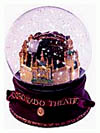
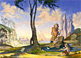

En el santoral de hoy se recuerda a San Ambrosio, obispo de Milán a fines del siglo cuarto. Era muy famoso por sus sermones y por su sabiduría; impresionó al mismo San Agustín, en sus tiempos de agnóstico-saliendo-del-maniqueísmo, e influyó en su conversión.
Cuenta Agustín en sus Confesiones que, al mudarse él y su madre a Milán, ella (Santa Mónica, cristiana devota) tuvo que desprenderse de ritos que practicaba en Africa, pero que Ambrosio había prohibido en su diócesis:
-
Así, cuando se enteró de que esto era cosa prohibida por aquel preclaro predicador y piadoso prelado [...]
ella se sometió con absoluta buena voluntad [...]
Sin embargo, me parece probable que no sin interiores dificultades hubiera cedido mi madre a la supresión de una práctica a la que estaba acostumbrada, de haber la prohibición procedido de otro que Ambrosio, al cual amaba mucho, especialmente por lo que él significaba para mi salvación. Y Ambrosio a su vez la amaba a ella por su religiosa conducta, por su fervor en las buenas obras y su asiduidad a la Iglesia; hasta el punto de que cuando me encontraba prorrumpía en alabanzas suyas y me felicitaba por la dicha de tener una madre semejante. Es que no sabía él qué casta de hijo tenía mi madre: un escéptico que dudaba de todo y no creía posible atinar con el camino de la verdad.
Yo no había aún aprendido a orar rogándote con gemidos que me ayudaras, sino que tenía puesta mi alma entera en la investigación de las cosas mundanas y el ejercicio de la disertación. Y a Ambrosio mismo lo tenía yo por el hombre feliz según el mundo, pues tantos honores recibía de gentes poderosas y sólo me parecía trabajoso su celibato. Por otra parte no tenía yo experiencia ni siquiera sospechas de las esperanzas que él tuviera, ni de las tentaciones que tenía que vencer derivadas de su propia excelencia; no tenía la menor idea de cuáles fueran sus luchas ni sus consuelos en las adversidades, ni sabía de que se alimentaba en secreto su corazón, ni qué divinos sabores encontraba en rumiar tu pan.
Pero él tampoco sabía nada de mis duras tempestades interiores ni de la gravedad del peligro en que me hallaba. Ni podía yo preguntarle las cosas que querría, pues me apartaba de él la multitud de quienes acudían a verlo con toda clase de asuntos y a quienes él atendía con gran servicialidad
San Agustín
Confesiones, Libro 6, Cap 3
-
Cuando [Ambrosio] leía, sus ojos recorrían las páginas
y su corazón entendía su mensaje, pero su voz y su lengua quedaban quietas. A menudo me hacía yo presente donde él leía, pues el acceso a él no estaba vedado ni era costumbre avisarle la llegada de los visitantes.
Yo permanecía largo rato sentado y en silencio: pues, ¿quién se atrevería a interrumpir la lectura de un hombre tan ocupado para echarle encima un peso más? Y después me retiraba, pensando que para él era precioso ese tiempo dedicado al cultivo de su espíritu lejos del barullo de los negocios ajenos y que no le gustaría ser distraído de su lectura a otras cosas. Y acaso también para evitar el apuro de tener que explicar a algún oyente atento y suspenso, si leía en alta voz, algún punto especialmente oscuro, teniendo así que discutir sobre cuestiones difíciles; con eso restaría tiempo al examen de las cuestiones que quería estudiar. Otra razón tenía además para leer en silencio: que fácilmente se le apagaba la voz. Mas cualquiera que haya sido su razón para leer en silencio, buena tenía que ser en un hombre como él.
En aquellos tiempos la palabra escrita (mucho menos difundida, claro... faltaban más de diez siglos para la invención de la imprenta moderna) era más que nada "trascripción de palabra hablada". Hoy la escritura es algo mucho más independiente: leemos sin pronunciar (y sin siquiera "imaginar el sonido" de) las palabras (y también por eso la lectura de poesía se hace cada vez más difícil...). La escritura llega a formar sus propios medios de expresión, ajenos al lenguaje hablado (las comillas, los paréntesis, los signos de admiración... ahora los "smileys", y todo lo que trae y traerá internet); incluso se llega al extremo (o a la aberración) de que la palabra hablada intente reproducir a la palabra escrita, en inquietante inversión de jerarquías.... (como cuando decimos: -'entre comillas'....) ; y -el colmo de los colmos- la palabra escrita invade hasta al lenguaje más primario, el de los gestos (ese espantoso signo yuppie de 'encomillar' una expresión hablada gesticulando con dos pares de dedos... ).
No sé si esto está correlacionado con la pobreza del lenguaje
hablado y la miseria del pensamiento actual, pero
si es así, Platón (o de Sócrates, o del rey egipcio)
tenía motivos para estar preocupado por la invención de la escritura... no?
Se ha hablado (y escrito!) mucho sobre esa preocupación,
que nos llega en el Fedro de Platón, desde distintos puntos
de vista... en algún
weblog , en algún comentario de
Ratzinger
a una encíclica papal, en algún
divague
de filósofos posmodernos nietzcheanos-derrideanos-etc
John de Disputations trae un post sobre los Salmos, sobre la conveniencia de aprenderse algunos de memoria (yo no sé ninguno, ni los leo con mucha frecuencia), y trae una selección.
Parece buen consejo, a tener en cuenta... aunque nosotros también tenemos el problemita de las traducciones. Va una rareza:
- ....
Tomamos, si tú das; tu larga mano
nos deja satisfechos;
si huyes, desfallece el ser liviano;
quedamos polvo hechos.
Mas tornará tu soplo y renovado
repararás el mundo
será sin fin tu gloria; y tú, alabado
de todos sin segundo.
Tú, que los montes ardes, si los tocas,
y al suelo das temblores;
cien vidas que tuviera y cien mil bocas
dedico a tus loores.
Mi voz te agradará, y a mí este oficio
será mi gran contento:
no se verá en la tierra maleficio
ni tirano sangriento.
Sepultará el olvido su memoria:
tú, alma, a Dios da gloria.
Es el final del salmo 103(104), en versión
poética -relativamente libre- de Fray Luis de León (está en el
libro "De los Nombres de Cristo").
Lindo lo de "tú que los montes ardes"
(el rayo); lindo lo de
"cien vidas que tuviera y cien mil bocas...".
Pero creo que lo que más me toca es el verso
"mi voz te agradará y a mí este oficio... ";
humildísima y entrañable imagen de la bienaventuranza.
Lamentablemente, fray Luis tradujo dos o tres salmos, nomás.
PD: Versión completa del salmo, acá.
Con toda sinceridad: cuando escuché esta letra creí que se trataba de una ironía. Después me dijeron que es (o pretende ser) en serio.
(Mitologías degradas para consumo de burgueses consumidores; Coelho -y otros autoayudadores- cubre otras zonas del mismo target).
La autocomplacencia y el cretinismo de los esclavos de "lo social".
"La Iglesia Católica es lo único que puede salvar al hombre
de la degradante esclavitud de ser un hijo de su tiempo ",
decía Chesterton.
La frase, puesta en su contexto provocador y polémico, tiene sustancia.
Hace poco salía una nota en Clarín sobre los comportamientos
sexuales "zarpados" de las mayorías adolescentes yanquis.
Jóvenes que se consideran liberadas, y han sido formadas
por las series televisivas de la TV ("Sex and the City", con guionistas
gays). Y la MTV.
- “Muchos de los videos de MTV sugieren que las adolescentes son exitosas si lucen sexys". , dice la doctora Ann Kearney-Cooke
Es imposible esclarecer qué se entiende por "éxito" en esa frase...
Aún descartados los parámetros anticuados, si nos atenemos al viejo
hedonismo que parece reinar, diríamos que "exitosa" es aquella persona
que tiene más placeres; y parece claro que el placer sexual es el
más deseable. Pero entonces, la afirmación de la dra. equivaldría a
esta: la MTV incita a las chicas a ser "sexys" ... para así
tener más sexo. (!) O será al revés ? Será que el hecho
de "ser exitosa" hace a una mujer "más sexy" ? De nuevo:
no puede ser que "ser exitosa" sea un "medio" para alcanzar
un "fin" (ser sexy), ya que precisamente 'exito' equivale
a alcanzar el fin... no?
Pongo la cabeza bajo la canilla. Los desesperados (los esclavos)
no tienen -propiamente- fines, me digo. Tienen sólo la necesidad
de "embriagarse" para no escuchar. La MTV (por decirlo así)
da a cada época y a cada cultura su droga, sus ídolos
y sus mentiras.
No se trata de "tener éxito para ser sexy" ni de "ser sexy para
tener éxito"; se trata de recordar que ambas cosas van juntas,
y forman parte del "modelo" de santidad invertida que se nos
enseña.
"En verdad os digo: el que peca, no es libre. El que peca es esclavo de sus pecados".
En el fondo, nos cuesta horrores (aún a los "cristianos") creer eso. Parece más bien una "exageración piadosa", una manera enfática de decir "pecar está mal". Pero para nuestro angel de la guarda, seguramente esa "esclavitud" es un hecho, tan claro como doloroso.
Aviso: Manuel Mª Domenech Izquierdo ha subido una nueva página, Guía para la interpretación de los símbolos del Apocalipsis.
Es un esquema sintético de las figuras que aparecen en el (difícil) último libro de la Biblia con sus (probables y discutibles) interpretaciones; sigue -al pie de la letra- la exégesis del P. Castellani en su libro "El Apokalipsis de San Juan", que debe ser el libro religioso más importante que ha producido el escuálido catolicismo argentino en toda su vida (pero esto también es probable y discutible, claro está).
La crucifixión de Clío ("Historia y pensamiento crítico", reza el epígrafe) es un weblog español, escéptico, con posts largos, y por arriba de la media (de los weblogs en español) en lo que respecta a calidad intelectual y literaria. Me alegro.
De las muchas cosas interesantes que encontré en una primera visita, cito dos observaciones, más bien laterales dentro del weblog, pero que me tocan:
Primero: un post bibliofílico,
sobre los libros viejos, y en particular sobre los intonsos.
Se llaman así aquellos libros que (debido a los antiguos
métodos -prácticamente desaparecidos ya- de edición-encuadernación)
salían de la imprenta con las hojas pegadas por sus bordes
"que se iban cortando a medida que avanzaba la lectura con un instrumento ad hoc, la plegadera (que no era más que una especie de cuchillo o abrecartas, no se vayan a pensar que era algo extraordinario). ".
(yo desconocía esa palabra, "intonsos"; interiormente, usaba
el adjetivo "virgen", que no me parece inadecuado).
Como es de imaginar, esta "virginidad" tiene su lado bueno
(es una garantía de que el libro no tiene subrayados, anotaciones, etc)
pero también -tratándose de libros viejos- tiene su lado triste:
-
Tristeza que se ve incrementada cuando en la primera página aparece, en la hermosa caligrafía de la época, la emocionada dedicatoria del autor a D. Fulanito de Tal, en prenda de su antigua amistad. Las fórmulas cambian, pero la idea es la misma. Fulanito de Tal, en prueba de su acrisolada amistad, ni siquiera llegó a leer nunca el libro.
[...]
a veces me pregunto si estos comentarios no son también libros intonsos a la espera de una plegadera amiga.
Y hablando de Leon Bloy...
Segundo: en otro
post José Luis empieza cuestionando:
-
No sé por qué extraña razón la expresión del Bautista de "Yo soy la voz que clama en el desierto..." se ha quedado en castellano como sinónimo de inutilidad
-
... Sé muy bien, Dios mío, lo que quieren decir ese
profesor de matemáticas, ese vendedor de castañas,
ese académico F. Copeé o ese G. Hanotaux cuando afirman
que alguien "predica en el desierto como San Juan".
Sé por cierto -un niño de tres años lo sabría- qué quieren decir...
pero ignoro lo que dicen en realidad. Lo ignoro casi tanto como
ellos mismos.
... Cuando leo el Evangelio, me basta continuar el capítulo para saber inmediatamente que una enorme multitud de oyentes de todas partes lo escuchaba en el desierto, que muchos se hacían bautizar por él y se convertían, y que en consecuencia no predicaba en vano. Lo cual es exactamente lo contrario de lo que parecen entender Coppée o el otro académico burgués precitado.... Habrán recibido esos hombres alguna inaudita revelación que invalida el texto sagrado ?
|
A propósito de los libros con las hojas "pegadas": En el Aleph, Borges, según creo recordar cuenta que los libros que regalaba a Beatriz Viterbo... Así empezaba el comentario. Pero me levanté y busqué el cuento en cuestión. Visita la casa de Beatriz por primera vez luego de su muerte y comenta "no estaría obligado como otras veces, a justificar mi presencia con módicas ofrendas de libros: libros cuyas páginas, finalmente, aprendí a cortar, para no comprobar, meses después, que estaban intactos" Intonso... debe tener la misma raíz que tonsura, ¿verdad? Pero esa es otra historia.
...
(Comentado por javier , 6/12/2002 02:01 ) Claro! Yo no había advertido la etimología: "intonso" debe ser equivalente a "intonsurado" (como un participio irregular; incorrupto-incorrompido ,etc). Por cierto, el diccionario da como primera acepción de intonso: "Que no tiene cortado el pelo". Y la etimología de tonsurar: parece que viene de una palabra latina, que significa "trasquilar". Es divertido ver las acepciones analógicas de una misma palabra, aplicada a animales, a sacerdotes y a libros. Respecto de los libros que "merecen ser robados" (por el bibliotecario o por el público?) de las bibliotecas... eso va para otro post. |
Aviso: este sitio está inaccesible esta medianoche (aproximadamente: entre 22:45 y 2:00 , hora argentina).
Entre los mails chistosos que están circulando estos días, aparece esta historia:
Unos muchachos compran un burro, que se les muere antes de llegar a sus manos. Se les ocurre entonces, contando sólo con el cadáver del animal, rifarlo ... como si estuviera vivo. Finalizado el sorteo, cuando el ganador pasa a retirar el premio le informan que el burro lamentablemente acaba de morir y le devuelven el dinero apostado. Negocio redondo.
Suele venir, como remate añadido, la mención de que los muchachos eran argentinos... o bien que cuando se hicieron grandes emigraron a Argentina ... y (en algunas variantes) que fundaron un banco por estos lugares.
Cuando leí esto, supe que la historia era mucho más antigua
de lo que pretendía (y nada autóctona)... pero no recordaba de dónde
la conocía (Wodehouse o J. Jerome, me dije).
Recién, hojeando unos libros de P. G. Wodehouse (para
un "informe" que postearé estos días), encontré la solución.
Es uno de los cuentos con Ukridge (uno de
los personajes wodehousianos) como protagonista,
"Una mentalidad equilibrada", incluido
en el libro "Ola de crímenes en el castillo de Blandings"
(ed. Anagrama). Se trata del mismo truco,
con las triviales diferencias (un perro en lugar de un burro;
el estafador es "Joe el Abogado", un corredor de apuestas).
La edición original es de 1937 ; es de creer que el truco
es muchísimo más viejo que eso...
Los que vieron -yo la vi hace poco- "Citizen Kane", (El Ciudadano) la película de Orson Welles, recordarán la escena del protagonista  murmurando "Rosebud" al tomar en la mano uno de esos adornos -hoy considerados un poco berretas- consistentes en un paisaje encerrado en un pequeño globo de vidrio que al ser agitados simula la caida de nieve; la significación de ese ensimismamiento de Kane -y su conexión con la dichosa palabra que repite al morir- sólo se revela al espectador, como de casualidad, al final de la película.
Sin demasiado riesgo de (y sin demasiada preocupación por) "estropear" (spoil) la trama, puede decirse -y no es mucho decir- que un objeto tal evoca facilmente la felicidad de la infancia (que acaso no sea más ni menos que la nostalgia del paraíso perdido), con esos asombros sencillos y vivos, esa mirada abierta, ese "buen apetito" cósmico que en la adolescencia perdemos.
Con ese globo de cristal nevado como excusa, y apuntando
a ese asombro feliz de la infancia, venga otra poesía
de Leopoldo Lugones, también de "Poemas solariegos".
Esta se llama El hombre-orquesta y el turco y describe,
con parecido tipo de versificación, la fascinación de los niños
que ven aparecer en la plaza de pueblo (a "la hora de la siesta"...
algo así como un adviento, acaso) un "hombre orquesta"
(músicos que tocaban al mismo tiempo varios instrumentos...)
y un "turco" (en la Argentina, suele llamarse
así a cualquier inmigrante de origen árabe) que vende
baratijas ... entre ellas, el globo de cristal nevado.
-
Apareció en la plaza de la villa una siesta,
Magnífico y grotesco,
Chispeante en síntesis piramidal su orquesta
Bajo las campanillas del sombrero chinesco.
Tocaba un viejo clarinete
Con escapes en falsete,
Mas también relumbrante de llaves argentinas
Que libertaban alegres marianinas.
Al mover, ya se sabe de qué ingenioso modo,
Con el pie los platillos y el bombo con el codo,
Relampagueaba el bronce su chafado estridor,
Y la caja rielaba con trémulo fulgor .
Entre abolladas cáscaras de lata y de barniz.
Y yo nunca he tenido sorpresa más feliz.
...
-
...
Pero, no bien el músico volvía a hacer su parte,
Tornábamos, sumisos, al dominio del arte.
Y tal era su hechizo
Ante el deslumbramiento de la menuda grey,
Que una chiquilina de don Andrés Carrizo,
Sentenció alelada: -Es el rey!
...
Tengo la vaga idea de haber leído, hace siglos, algún comentario -a favor, creo- de Borges, sobre este poema; pero puedo equivocarme.
Anoticia La Nación de un eclipse de sol que se vio en Sudáfrica hoy.
-
La Luna, en fase llena, aunque 400 veces más pequeña que el sol, ocultó al astro rey de manera total o parcial, dependiendo del área de visualización, creando una oscuridad de diferente intensidad que permitió, en pleno día, ver varias estrellas y el reluciente planeta Venus. [...]
Por ej..
Leyendo estos días:
Sigo con la Postdata... de Kierkegaard (a paso lento, pero más firme de lo esperado; leidas unas 150 de 600 páginas, veo ya que es un librazo; me alegra entender bastante -para lo que me da el cuero-, incluso entender mejor la lucha de K. contra Hegel...).
Hojeando la Introducción al cristianismo de Ratzinger; anoche leí sus comentarios sobre el tema de la Trinidad; muy interesante y legible.
También anduve releyendo algunas páginas de las Confesiones de San Agustín.
Pasé ayer por la librería
Romano y compré 3 usados: uno de André Frossard sobre
(san) M. Kolbe; "Qué es la Vida", de Schrodinger y "El azar y la necesidad"
de Monod. Estoy leyendo estos dos últimos, sin mucho orden.
Y por esas circunstancias, alguna que otra página de "La abolición
del hombre" de C. S. Lewis (a escanear), "Cronicas marcianas"
de Bradbury, y "Lo impuro" de Guitton.
Ah, y estuve leyendo "Don y misterio" (especie de autobiografía
breve de Juan Pablo II, especialmente dedicada al tema
de la vocación sacerdotal) y ahora estoy picoteando algunas
cositas de Veritatis Splendor (la encíclica con el nombre más polenta
de todos los tiempos, quizás).
Salpimentado todo esto con tres historias de
Savarese
(con un par de "Pepe Sanchez") que conseguí el sábado
en Parque Centenario.
Anduve haciendo los trámites para asociarme a la biblioteca municipal de mi barrio. La cosa ahora es muy sencilla (ni siquiera "garante" piden), gratis, y la afiliación te sirve para todas las bibliotecas de Buenos Aires ; salvo excepciones lógicas, se pueden retirar libros a domicilio.
Mi motivación era más religiosa que literaria: resulta que una de las dichas bibliotecas tiene las obras de Ana Catalina Emmerich, y quiero sacarlas para fotocopiarlas.
La bibliotecaria que me atendió, me dio a llenar
el formulario, y me despidió con un "Podés pasar
en 48 horas a retirar el carnet". Antes de irme, le pegué
un vistazo al catálogo... Las cosas típicas de estas
bibliotecas: poco material nuevo pero suelen
encontrarse rarezas... En este caso, encontré
una cantidad absurda de libros
de Leon Bloy... en francés (prácticamente
sus obras completas); y me
animaría a apostar que absolutamente nadie los
ha leído desde aquel día en que -donación de algún
pariente de un muerto, seguro- fueron a parar a los
estantes de la biblioteca. Había dos o tres que ni
siquiera están editados en castellano...
Mientras yo miraba, la bibliotecaria (relativamente joven)
se me acercó para darme alguna información adicional
completamente innecesaria .... "Esta leyó el formulario y
vio lo de '35 años, soltero' , ... interesante ... ", me dije.
A la semana siguiente, entonces, me acerqué a retirar el
carnet, con el vago proyecto de pedir uno de esos
libros insólitos... ("Le révélateur du Globe " de Leon Bloy),
para impresionar a la biliotecaria -acaso hacerla desmayar.
- Eh! -me advertía severo mi ángel de la guarda-
dejate de joder! No era que tu interés
era 'religioso' ? Como era eso de "Busca primero el Reino
y lo demás se te dará por añadidura"? Eh ?
Yo no le hice mayor caso, y entré a la biblioteca...
- No, el carnet todavía no está. Pasá en un par de días-
me dijo el nuevo bibliotecario ( barbudo, corpulento)
con voz ronca...
Hoy, 3 de diciembre: San Francisco Javier, 1506-1552, el jesuita discípulo de San Ignacio, que anduvo misionando por todo el mundo, y es el "patrono de las misiones".
Me parece de notar esto: cuando Francisco Javier llegó a las colonias portuguesas en Africa para "convertir a los infieles", encontró que había que empezar con los portugueses "cristianos" .. que -entre otras cosas- usaban el rosario para contar los azotes a dar a los esclavos. Todo un símbolo...
Se cuenta también que era tanta la gente que convertía al cristianismo, que a veces necesitaba ayudantes que le sostuvieran los brazos, cansados de bautizar.
Anduvo también por India, China y Japón.
El santoral católico, con su población tan numerosa
y variopinta, suele ser motivo de sarcasmo entre
algunos escépticos refinados (y algunos protestantes),
que se ríen
de las estampitas ridículas, las advocaciones insólitas
y las leyendas ingenuamente milagreras.
Para uno que está adentro, esa multitud colorida
forman parte del calor de familia, y sus mismas
extravagancias son tan entrañables como
las de un abuelo de esos de antes. Sin ellos, la
casa resultaría un poco menos acogedora y un poco
menos alegre.
The Snooze of Complacency, lindo post en Kairos.
Es ese tipo de post, (más bien ligero, no muy largo ni muy pretencioso; con algo de anotación-de-diario-personal, experiencia cotidiana-trivial, alguna gota de humor, y alguna sustancia para morder) que yo quisiera poner escribir casi siempre (y no lo escribo casi nunca, ya lo sé).
(Si al menos fuera capaz de escribir un post con menos de tres pares de paréntesis ...! pero ni siquiera eso...!).
-
Sonrió ella al advertir sus recuerdos, y se acercó a él;
y hablaron largo rato, casi sin palabras, y aprendió

de ella muchas cosas, algunas de las cuales lo alegraron
y otras lo llenaron de tristeza.
Retrocedió después en el tiempo con la imaginación, rememorando su vida hasta llegar al día de la Fiesta de los Niños y su encuentro con la estrella, y súbitamente recordó la pequeña figurita danzante con la varita mágica que decoraba la torta; y apartó avergonzado los ojos de la hermosura de la Reina.
Pero ella rió como lo había hecho en el Valle
de la Eterna Mañana.
«No te aflijas por mí,
Frente Estrellada», dijo, «ni te avergüences
demasiado de tu propia gente.
Acaso valga más un figurita, antes que el
total olvido de Fantasía.
Para algunos, ése es el único atisbo;
para otros, es el despertar.
Desde aquel día tú siempre has sentido
en el corazón el deseo de verme,
y yo he accedido a él. Pero nada más
puedo darte....»
J. R. R. Tolkien
El herrero de Wootton Major
Ignacio comenta criticándome -amablemente- por « la famosa frase tuya: "más de esto otro día", "ya escribiré un post sobre esto", "vuelva usted mañana...". Y mañana, ya se sabe, no llega nunca. Decime, ¿nunca pensaste en dedicarte a la política? ».
Sí... (digo, no! jamás pensé en dedicarme a la política); pero sí,
soy conciente del abuso de esa frase. Pero uno puede
mirarla desde el punto de vista opuesto:
Es un hecho que uno no tiene demasiados temas de conversación,
el repertorio de intereses (generales y particulares) es siempre
acotado, y los mismos temas vuelven una y otra vez... por
no decir que uno dice siempre las mismas cosas. En este sentido,
decir «más de esto otro día», bien podría leerse como:
«ya sé que este tema -o similar- fue tocado antes, y que
con esto debería bastar; no importa, yo tengo obsesión con
estos temas, y siento que todavía no lo he agotado (contrariamente
al público lector) así que -me temo- volveré a tocarlo, diciendo
(casi) lo mismo con (apenas) distintas palabras en futuros posts;
lo siento». Visto así, se trata de una predicción más bien
pesimista, casi una amenaza;
y entonces lo del "mañana, ya se sabe, no llega nunca" sería
más bien esperanzador... Pero lamentablemente, consta que esas amenazas
mías suelen cumplirse, si no mañana, pasado mañana...
También comenta Ignacio, a propósito de lo de
Ratzinger: «Te recomiendo además su "Introducción al Cristianismo" que publicó Sígueme. La mejor es la edición 2000 -tiene un prólogo especial- pero no sé si consigue. Hay anteriores. No es un libro fácil -ninguno de él lo es- pero vale la pena. Otras dos recomendaciones: -"La fiesta de la Fe" (DDB) y "El espíritu de la Liturgia».
Casualmente -o no tanto- anoche estuve releyendo páginas
de la "Introducción al Cristianismo" , que efectivamente
está bueno, y que no es muy fácil (el título parece una cargada).
Lo tengo en la edición de esa colección (fallida) "Biblioteca
Cristiana" de Planeta-D'Agostini (tapas duras celestes, salía
en kioscos; este es uno de los pocos títulos valiosos).
Y caí en una parte que me interesó: el análisis del significado
de ese artículo del Credo, de que Jesús "descendió
a los infiernos", que uno nunca está seguro de entender...
La interpretación de Ratzginger, en conexión con la "muerte
de Dios" (en el sentido moderno -nietzcheano- de la expresión)
es muy interesante.
Ya escribiré algo más sobre eso, otro día .... (ups!).
PD: Gracias a Ignacio y al resto que mandaron comentarios. En algún tiempo no muy lejano, esto -el sistema de comentarios- va a cambiar, pero por ahora... es lo que hay.
También en el weblog de Amy salió la pregunta (originada en un cura... quizás harto de tantos católicos de crítica fácil ...) : Qué es un "buen sermón" ?
Las respuestas (en los comentarios) son de interés.
Pero el post de John, de Disputations, me encantó:
-
...
muchos dicen que gustan de los sermones que se atienen a los fundamentos de la fe, que condenan explícitamente el aborto, que no se meten en política...
Todo eso está muy bien; pero se me hace que ese es el perfecto "sermón para los otros" (ya sabemos para quienes: para ellos: los católicos mistongos, los ignorantes, los tibios, los catolicos-por-inercia-cultural, los que en lugar de atender a las enseñanzas del Papa gustan de tocar la guitarra y tomarse de las manos en el padrenuestro....). No para nosotros ... los católicos d'enserio.... viste.
O sea: qué tipo de discurso estamos reclamando? uno que estemos en condiciones de "aprobar" , y que pueda servir para enseñar a los otros... mientras que a nosotros no nos afecta : que sólo nos provoca asentimiento; no nos molesta, no nos enseña, no nos cambia...
(traducción muy libre).
En todo caso, se trata de algo que me toca de cerca. Lo veo muy conectado contra lo que en estos últimos tiempos se me aparece como un "enemigo espiritual" absoluto (en mi alma y en la de mi prójimo): la auto-indulgencia; sobre todo cuando (y pasa casi siempre) ese pecado está alimentado por lo social; y peor, cuando todo eso viene disfrazado de Bien (religioso, ético, político...).
Más sobre esto, otro día.
Vía Amy Welborn: parece que se viene una película basada en Brideshead revisited (Retorno a Brideshead), la -qué adjetivo poner...- novela de Evelyn Waugh.
Hacen referencia, como es de esperar, a la miniserie televisiva, tan aclamada (veo que según A. Burgess es "the best piece of television ever made"...), con Jeremy Irons, y que nunca pude conseguir por estos pagos.
Y desde ya, quedo esperándola; y con más ganas que las siguientes entregas de ESDLA...
Anduve hoy por ese "Outlet de libros y música" en Palermo; tal como había escuchado/leído: de cuarta; ni comparación con Av. Corrientes, o Parque Rivadavia (o la misma cercana feria de Plaza Italia).
Como para no desaprovechar del todo el viaje, me metí
en la muestra de Jauretche. Pasable, con cosas interesantes
(y algunas zonceras, inevitables en una exposición
organizada por el mismo oficialismo ideológico tilingo de hoy); paga
-con lo justo- los $4 de entrada.
Por otra parte, andamos tan escasos por acá de figuras
públicas -con actividades políticas-
medianamente queribles
en nuestro pasado reciente (del hoy no hablemos)
... vale la pena conocerlo.
Cuando alguien usa el adjetivo "comunista" para calificar a ... digamos... Alfonsín (cuesta pensar en nombres radicales en estos días), uno se sonríe e inmediatamente adivina el paisaje (o agujero) ideológico-político en que vive el adjetivador.
Cuando Clarín usa el adjetivo de "ultraconservador" para referirse al cardenal Ratzinger ... no diré que uno adivina el paisaje ideológico-religioso de Clarín (y del corresponsal Algarañaz), porque uno ya lo sabe desde siempre; pero igual, causa gracia.
También el adjetivo "polémico" es típico (en este contexto significa que el periodista se niega a darle su bendición, su Nihil Obstat). Y eso de que "piloteará la sucesión papal" y "piloteará las votaciones", con sus sugerencias veladas de un "poder manipulador" es otra soberana gansada; pero en fin, es lo que el público lector quiere leer, es de creer.
Acá está la noticia en Zenit.
PD: Por cierto: ojalá fueran verdaderos esos
resquemores clarinescos! ojalá Ratzinger -quizás el
teólogo actual que más admiro, por su
sensatez unida a su fuerza intelectual- tuviera
el poder de marcar una orientación para la elección
del próximo Papa. Pero no lo creo.
Va acá un texto de Ratz.,
Fe, verdad y cultura, sobre la encíclica del Papa Fides et ratio
(curiosamente, empieza
citando las "Cartas del diablo a su sobrino", de C. S. Lewis,
ya citadas varias veces acá... (Nota mental: tengo que dedicarle
algún post a Lewis algún día).
El viernes a la noche, en el subte de vuelta del trabajo, viajaba un pibe (unos 25 años), sentado, leyendo. Yo -no puedo con mi genio- curioseando de reojo, alcancé a ver que se trataba de un devocionario (librito con oraciones, salmos y otros textos bíblico-piadosos) si no vi mal, estaba leyendo unas letanías.
Atípico, en verdad.
Hoy, "día mundial del Sida", La Nación nos alecciona al respecto a través de un "chiste" de Maitena. (Maitena es una humorista gráfica, talentosa y popular; se ha dedicado también a la historietas pornográficas; sus personajes son una muestra fiel del pensamiento de la mujer argentina -porteña- progresista standard). Una de las mujeres dice :
-"Estoy preocupada por mi hijo... le encontré el cajón lleno de preservativos."
La otra (que vendría a ser "la buena" de la historia, la que piensa y obra como
-"Más preocupada tendría que estar yo... que nunca le encontré ninguno".
Algo "con mensaje", como se ve. El sermón para los que no van a misa...
Pero -recordando al pibe del subte- se me ocurre un agregado :
una tercer madre (pos)moderna, más justamente preocupada que las otras:
-"Lo mío es mucho peor ... quise comprobar que mi hijo tenía
preservativos en el cajón... y sólo le encontré un devocionario católico y un rosario!"
Pero es verdad que también en el vocabulario de un pornógrafo progresista hay palabras que "no se dicen", ... ("rosario" en ese contexto una de esas malas palabras).
Empieza el tiempo de Adviento. Nuevo año litúrgico.
Cuatro domingos de preparación (adviento es tiempo "moderadamente penitencial") para el gozo de Navidad.
EWTN ha puesto una linda
página de Adviento, con las fechas destacadas.
(La imagen hace referencia a las cuatro velas
de la "Corona de Adviento": se van encendiendo, una en cada domingo...)
También material en aciprensa , encuentra.com y corazones.org.